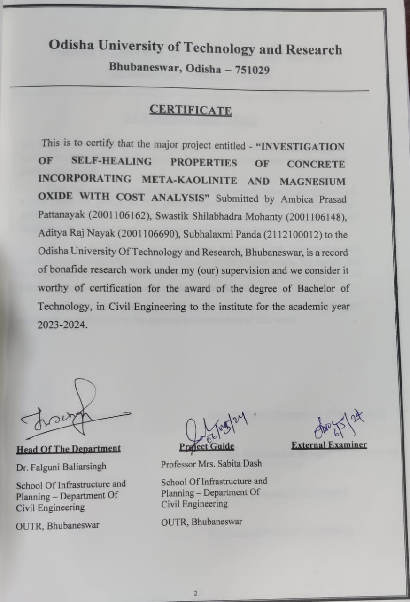

Academic projects:
Self Healing Concrete using chemical admixtures like Meta-K
and MgO with cost analysis. (06/2023 - 05/2024)
Research Summary:
1. Researched the combined effects of crystalline waterproofing
admixtures, meta-kaolinite, and magnesium oxide (MgO) to enhance
concrete's self-healing capabilities and extend its service life in harsh
environments.
2. Investigated the individual and synergistic contributions of these
additives to improve durability and self-repair mechanisms.
3. Performed laboratory experiments, including Compression Strength
Test and Split Tensile Strength Test, to evaluate the self-healing
efficiency of various concrete mix designs.
4. Observed significant recovery after inducing 70% damage, demonstrating the potential for developing durable and sustainable
concrete formulations.

Non-Academic projects:
Basic Calculator
Description:
The focus is on creating a basic calculator. When a user loads the web page, they should see a simple calculator that supports Addition, Subtraction, Multiplication, and Division, displaying the results. It's a straightforward calculator without parentheses or any other complex mathematical operations.
Features:
- A user-friendly calculator interface with buttons for digits (0-9) and basic operators (+, -, *, /).
- The ability to input numbers and perform basic arithmetic operations.
- A display that shows the input and result.
Basic Calculator
Basic Image Slider
Description:
The goal is to create a basic image slider. When a user loads the web page, they should be able to see a sliding view with a set of preloaded images. The user can scroll through these images using left and right slider buttons.
Features:
- A sliding view that displays a limited set of preloaded images.
- Left and right slider buttons to navigate through the images.
Image Slider